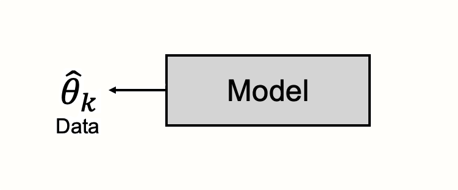
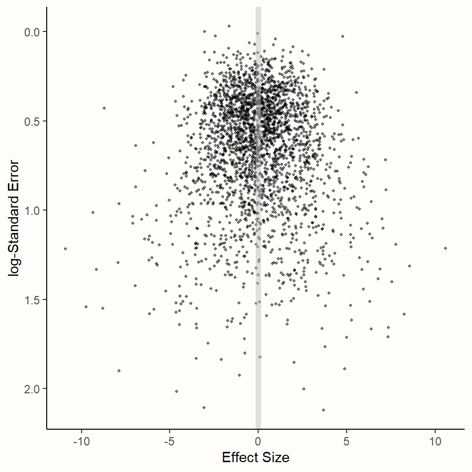

效应量的合并

一条漫长而曲折的道路已经展现在我们身后。幸运的是，我们现在已经到达了每个荟萃分析的核心部分：效应量的合并。我们希望您能够抵制住直接从本章开始的诱惑。本书已经讨论了各种主题，包括研究问题的定义、搜索、选择和提取研究数据的指南，以及如何准备我们的效应量。
彻底的准备是良好荟萃分析的关键要素，并且对接下来要执行的步骤非常有帮助。我们可以向您保证，您花在学习前几章上的时间是物有所值的。
有很多包可以让我们在 R 中合并效应量。在这里，我们将重点介绍 {meta} 包的功能，该包我们在 @ref(packages) 章中已经安装过了。这个包非常用户友好，只需几行代码就可以为我们提供几乎所有重要的荟萃分析结果。在前一章中，我们介绍了效应量有不同的“风味”，具体取决于感兴趣的结果。{meta} 包包含专门的荟萃分析函数，用于处理每种效应量指标。所有函数也几乎遵循相同的结构。
因此，一旦我们对 {meta} 的工作方式有了基本的了解，编写荟萃分析代码就会变得简单明了，无论我们关注哪种效应量。在本章中，我们将介绍 {meta} 包的总体结构。当然，我们还将通过实践示例更详细地探索该包的荟萃分析函数。
{meta} 包允许我们调整效应量合并方式的许多细节。正如我们之前提到的，荟萃分析伴随着许多“研究者自由度”。关于我们可以应用的统计技术和方法有很多选择，而且一种方法是否比另一种方法更好通常取决于具体情况。
在我们开始在 R 中进行分析之前，我们首先要对荟萃分析的统计假设和背后的数学原理有一个基本的了解。重要的是，我们还将讨论荟萃分析背后的“思想”。在统计学中，这个“思想”转化为一个模型，我们将了解荟萃分析模型是什么样的。
正如我们将看到的，荟萃分析的性质要求我们立即做出一个根本性的决定：我们必须假设一个固定效应模型或一个随机效应模型。需要了解荟萃分析合并背后的概念，以便在知情的情况下决定哪种模型，以及其他分析规范，在何种情况下更合适。
固定效应模型和随机效应模型
在我们指定荟萃分析模型之前，我们首先应该明确统计模型实际上是什么。统计学充满了“模型”，而且您很可能以前在这个语境中听说过这个术语。有“线性模型”、“广义线性模型”、“混合模型”、“高斯加性模型”、“结构方程模型”等等。
模型在统计学中的普遍存在表明了这个概念的重要性。在某种程度上，模型构成了我们几乎所有统计工具箱的基础。在 \(t\) 检验、方差分析和回归分析的背后都有一个模型。每个假设检验都有其相应的统计模型。
在定义统计模型时，我们从已经给我们的信息开始。这实际上就是我们的数据1。在荟萃分析中，数据是在纳入研究中观察到的效应量。我们的模型用于描述生成这些观察数据的过程。
这些数据被视为一个黑盒子的产物，而我们的模型旨在阐明黑盒子内部发生的事情。
通常，统计模型就像一种特殊的理论。模型试图解释生成我们观察数据的机制，尤其是当这些机制本身无法直接观察到时。它们是对生活的模仿，使用数学公式以理想化的方式描述我们周围世界中的过程。
模型的这种解释性特征深深地根植于现代统计学中，荟萃分析也不例外。将模型概念化为解释工具是统计学“文化”的标志，正如 Breiman [-@breiman2001statistical] 著名地估计，98% 的统计学家都坚持这种文化。
通过指定一个统计模型，我们试图找到一个近似表示我们数据背后“现实”的模型。我们想要一个数学公式来解释如何根据研究的观察结果找到所有研究背后的真实效应量。正如我们在 @ref(what-are-mas) 章中学到的，荟萃分析的最终目标之一是找到一个数值来表征我们的研究作为一个整体，即使观察到的效应量因研究而异。因此，荟萃分析模型必须解释为什么以及观察到的研究结果差异有多大的原因，即使只有一个总体效应。
有两种模型试图准确地回答这个问题，即固定效应模型和随机效应模型。尽管两者都基于不同的假设，但它们之间仍然存在很强的联系，我们很快就会看到。
固定效应模型
固定效应模型假设所有效应量都来自一个单一的、同质的总体。它指出所有研究都共享相同的真实效应量。这个真实效应是我们想要在荟萃分析中计算的总体效应量，用 \(\theta\) 表示。
根据固定效应模型，研究 \(k\) 的观察效应量 \(\hat\theta_k\) 偏离 \(\theta\) 的唯一原因是由于其抽样误差 \(\epsilon_k\)。固定效应模型告诉我们，产生研究不同效应量的过程，即“黑盒子”的内容，很简单：所有研究都是相同真实效应量的估计量。然而，由于每项研究只能从无限大的研究人群中抽取或大或小的样本，因此结果会受到抽样误差的影响。这种抽样误差导致观察到的效应偏离总体真实效应。
我们可以这样描述这种关系 [@borenstein2011introduction, 第 11 章]：
\[\begin{equation} \hat\theta_k = \theta + \epsilon_k (\#eq:pes1) \end{equation}\]
对于警觉的读者来说，这个公式可能与 @ref(what-is-es) 章中的公式非常相似。您没有错。在之前的公式中，我们定义了某个研究 \(k\) 的观察效应量 \(\hat\theta_k\) 是该研究真实效应量 \(\theta_k\) 的估计量，受到该研究抽样误差 \(\epsilon_k\) 的影响。
之前的公式与固定效应模型的公式之间只有一个很小但很有见地的差异。在固定效应模型的公式中，真实效应量不是用 \(\theta_k\) 符号表示，而是用 \(\theta\) 表示；下标 \(k\) 被省略了。
以前，我们只是对一项个体研究 \(k\) 的真实效应量进行陈述。固定效应模型更进一步。它告诉我们，如果我们找到研究 \(k\) 的真实效应量，这个效应量不仅对 \(k\) 而言是真的，而且对我们荟萃分析中的所有研究而言也是真的。一个研究的真实效应量 \(\theta_k\)，和总体合并的效应量 \(\theta\)，是相同的。
固定效应模型背后的思想是，观察到的效应量可能因研究而异，但这只是由于抽样误差造成的。实际上，它们的真实效应量都相同：它们是固定的。因此，固定效应模型有时也被称为“等效应”或“共同效应”模型。2
固定效应模型的公式告诉我们，观察到的效应量 \(\theta_k\) 偏离真实总体效应的唯一原因是：由于抽样误差 \(\epsilon_k\)。在 @ref(what-is-es) 章中，我们已经讨论了抽样误差与研究样本量之间存在联系。在所有条件相同的情况下，随着样本量的增大，抽样误差减小。我们还了解到，抽样误差可以用标准误差来数值表示，标准误差也会随着样本量的增加而减小。
虽然我们不知道研究的真实总体效应量，但我们可以利用这种关系来得出真实总体效应的最佳估计值，\(\hat\theta\)。我们知道标准误差越小，对应的抽样误差也越小；因此，与标准误差大的研究相比，标准误差小的研究应该能更好地估计真实总体效应。
我们可以用一个模拟来说明这一点。使用我们之前使用过的 rnorm 函数，我们模拟了一系列研究，其中真实总体效应为 \(\theta = 0\)。我们选取了几个样本，但改变了样本量，使得“观察到”的效应之间的标准误差不同。模拟的结果可以在图 @ref(fig:funnel1) 中找到。
Warning: Using `size` aesthetic for lines was deprecated in ggplot2 3.4.0.
ℹ Please use `linewidth` instead.Warning: The `size` argument of `element_rect()` is deprecated as of ggplot2 3.4.0.
ℹ Please use the `linewidth` argument instead.
模拟结果显示出一种有趣的模式。我们看到具有较小抽样误差的效应量紧密地聚集在真实效应量 \(\theta = 0\) 附近。随着 y 轴上的标准误差3 的增加，效应量的离散程度变得越来越大，并且观察到的效应越来越偏离真实效应。
这种行为可以通过固定效应模型的公式来预测。我们知道具有较小标准误差的研究具有较小的抽样误差，因此它们对总体效应量的估计更可能接近真实值。
我们已经看到，虽然所有观察到的效应量都是真实效应的估计量，但有些比其他的好。当我们合并荟萃分析中的效应时，我们应该给予具有更高精度（即更小的标准误差）的效应量更大的权重。如果我们想要计算固定效应模型下的合并效应量，我们只需使用所有研究的加权平均值。
要计算每个研究 \(k\) 的权重 \(w_k\)，我们可以使用标准误差，对其进行平方以获得每个效应量的方差 \(s^2_k\)。由于较低的方差表示较高的精度，因此使用方差的倒数来确定每个研究的权重。
\[\begin{equation} w_k = \frac{1}{s^2_k} (\#eq:pes2) \end{equation}\]
一旦我们知道权重，我们就可以计算加权平均值，即我们对真实合并效应 \(\hat\theta\) 的估计。我们只需要将每个研究的效应量 \(\hat\theta_k\) 与其对应的权重 \(w_k\) 相乘，将荟萃分析中所有研究 \(K\) 的结果相加，然后除以所有个体权重的总和。
\[\begin{equation} \hat\theta = \frac{\sum^{K}_{k=1} \hat\theta_kw_k}{\sum^{K}_{k=1} w_k} (\#eq:pes3) \end{equation}\]
这种方法是荟萃分析中计算平均效应的最常见方法。由于我们使用方差的倒数，因此它通常被称为逆方差加权或简称为逆方差荟萃分析。
对于二元效应量数据，有其他方法来计算加权平均值，包括 Mantel-Haenszel、Peto 或 Bakbergenuly [-@bakbergenuly2020methods] 的样本量加权法。我们将在 @ref(pooling-or-rr) 章中讨论这些方法。
{meta} 包使得执行固定效应荟萃分析非常容易。但是，在此之前，让我们尝试在 R 中“手动”进行逆方差合并。在我们的例子中，我们将使用 SuicidePrevention 数据集，我们已经在 @ref(data-prep-R) 章中导入了该数据集。
SuicidePrevention 数据集包含原始效应量数据，这意味着我们必须首先计算效应量。在本例中，我们计算了小样本调整的标准化均数差（Hedges’ \(g\)）。为此，我们使用了 {esc} 包中的 esc_mean_sd 函数（@ref(b-group-smd) 章）。
该函数有一个额外的参数 es.type，通过该参数我们可以指定是否要执行小样本校正（通过设置 es.type = "g"；@ref(hedges-g) 章）。
自 R 4.2.1 版本发布以来，我们还必须将对 esc_mean_sd 的调用插入到 pmap_dfr 函数中，以便为数据集中的每一行计算一个标准化均数差：
# 加载 dmetar、esc 和 tidyverse (用于管道)
library(dmetar)
library(esc)
library(tidyverse)
# 从 dmetar 加载数据集
data(SuicidePrevention)
# 计算 Hedges' g 和标准误差
# - 我们将研究名称保存在 "study" 中。
# - 我们使用 pmap_dfr 函数来计算
# 每一行的效应量。
SP_calc <- pmap_dfr(SuicidePrevention,
function(mean.e, sd.e, n.e, mean.c,
sd.c, n.c, author, ...){
esc_mean_sd(grp1m = mean.e,
grp1sd = sd.e,
grp1n = n.e,
grp2m = mean.c,
grp2sd = sd.c,
grp2n = n.c,
study = author,
es.type = "g") %>%
as.data.frame()})
# 让我们快速浏览一下数据
# 数据集包含 Hedges' g ("es") 和标准误差 ("se")
glimpse(SP_calc)## Rows: 9
## Columns: 9
## $ study <chr> "Berry et al.", "DeVries et …
## $ es <dbl> -0.14279447, -0.60770928, -0…
## $ weight <dbl> 46.09784, 34.77314, 14.97625…
## $ sample.size <dbl> 185, 146, 60, 129, 100, 220,…
## $ se <dbl> 0.1472854, 0.1695813, 0.2584…
## $ var <dbl> 0.02169299, 0.02875783, 0.06…
## $ ci.lo <dbl> -0.4314686, -0.9400826, -0.6…
## $ ci.hi <dbl> 0.145879624, -0.275335960, 0…
## $ measure <chr> "g", "g", "g", "g", "g", "g"…接下来，我们使用这些结果来应用固定效应模型的公式：
# 计算每个研究的逆方差权重
SP_calc$w <- 1/SP_calc$se^2
# 然后，我们使用权重来计算合并效应
pooled_effect <- sum(SP_calc$w*SP_calc$es)/sum(SP_calc$w)
pooled_effect## [1] -0.2311121我们的计算结果表明，假设一个固定效应模型，合并效应量为 \(g \approx\) -0.23。
随机效应模型
正如我们所看到的，固定效应模型是一种概念化荟萃分析数据生成方式以及如何合并效应的方式。然而，重要的问题是：这种方法是否充分反映了现实？
固定效应模型假设我们所有的研究都是同质群体的一部分，并且观察到的效应差异的唯一原因是研究的抽样误差。如果我们在没有抽样误差的情况下计算每项研究的效应量，那么所有真实效应量将完全相同。
对这个概念进行快速的现实检验，我们发现固定效应模型的假设在许多实际应用中可能过于简单。荟萃分析中的研究总是完全同质的，这简直是不现实的。研究经常会存在差异，即使只是在细微的方式上。感兴趣的结果可能以不同的方式测量。也许治疗的类型不完全相同，或者治疗的强度和持续时间不同。研究的目标人群可能不完全相同，或者可能使用的对照组存在差异。
您荟萃分析中的研究很可能不仅在一个方面存在差异，而且在几个方面同时存在差异。如果这是真的，我们可以预期真实效应中存在相当大的研究间异质性。
所有这些都使固定效应模型的有效性受到质疑。例如，如果一些研究使用了不同类型的治疗，那么似乎很正常的是，一种形式比另一种更有效。假设这些差异只是噪音，由研究的抽样误差产生，这未免有些牵强。
恰恰相反，可能存在无数的原因导致研究的真实效应量存在实际差异。随机效应模型解决了这个担忧。它为我们提供了一个模型，该模型通常能更好地反映我们数据背后的现实。
在随机效应模型中，我们希望解释效应量显示的方差大于从一个单一同质群体中抽取的方差这一事实 [@hedges1998fixed]。因此，我们假设个体研究的效应不仅由于抽样误差而有所偏差，而且还存在另一个方差来源。
这个额外的方差分量是由研究不是来自一个单一群体这一事实引入的。相反，每项研究都被视为从一个“宇宙”群体中独立抽取的结果。
随机效应模型假设不仅存在一个真实的效应量，而且存在一个真实效应量的分布。因此，随机效应模型的目标不是估计所有研究的一个真实效应量，而是真实效应分布的均值。
让我们看看如何用公式表达随机效应模型。与固定效应模型类似，随机效应模型首先假设观察到的效应量 \(\hat\theta_k\) 是研究真实效应量 \(\theta_k\) 的估计量，受到抽样误差 \(\epsilon_k\) 的影响：
\[\begin{equation} \hat\theta_k = \theta_k + \epsilon_k (\#eq:pes4) \end{equation}\]
我们使用 \(\theta_k\) 而不是 \(\theta\) 这一事实已经表明了一个重要的差异。随机效应模型仅假设 \(\theta_k\) 是一项单一研究 \(k\) 的真实效应量。它规定存在第二个误差来源，用 \(\zeta_k\) 表示。这个第二个误差来源是由以下事实引入的：即使研究 \(k\) 的真实效应量 \(\theta_k\) 也只是真实效应总体分布的一部分，该分布的均值为 \(\mu\)。
\[\begin{equation} \theta_k = \mu + \zeta_k (\#eq:pes5) \end{equation}\]
随机效应模型告诉我们，在我们的黑盒子里发生了两个过程的层次结构 [@thompson2001multilevel]：一项研究的观察效应量由于抽样误差而偏离了它们的真实值。但是，即使真实效应量也只是从真实效应总体中抽取的一个样本，我们希望将该总体的均值 \(\mu\) 估计为我们荟萃分析的合并效应。
通过将第二个公式插入到第一个公式中（即，用它在第二个公式中的定义替换 \(\theta_k\)），我们可以用一行来表达随机效应模型 [@borenstein2011introduction, 第 12 章]：
\[\begin{equation} \hat\theta_k = \mu + \zeta_k + \epsilon_k (\#eq:pes6) \end{equation}\]
这个公式清楚地表明，我们观察到的效应量由于两个误差项 \(\zeta_k\) 和 \(\epsilon_k\) 而偏离了合并效应 \(\mu\)。这种关系在图 @ref(fig:random) 中进行了可视化。
随机效应模型的一个关键假设是 \(\zeta_k\) 的大小与 \(k\) 无关。换句话说，我们假设没有任何东西可以先验地表明一项研究中的 \(\zeta_k\) 高于另一项研究。我们预先假定 \(\zeta_k\) 的大小是偶然的产物，而且仅仅是偶然的产物。
这被称为随机效应模型的可交换性假设 [@higgins2009re; @lunn2012bugs, 第 10.1 章]。假设所有真实效应量都是可交换的，因为在我们看到数据之前，我们没有任何东西可以告诉我们一些研究 \(k\) 中 \(\zeta_k\) 将有多大。
我应该使用哪个模型？
在实践中，发现一组研究是完全同质的非常罕见。即使我们遵循最佳实践，并通过我们的 PICO（@ref(research-question) 章）尽可能精确地确定分析的范围，也是如此。
因此，在包括医学和社会科学在内的许多领域，通常总是使用随机效应模型，因为几乎总是可以预期到一定程度的研究间异质性。只有当我们没有检测到任何研究间异质性（我们将在 @ref(heterogeneity) 章中讨论如何做到这一点）并且当我们有非常好的理由假设真实效应是固定的时，才可以使用固定效应模型。例如，当只考虑一项研究的精确复制时，或者当我们对一项大型研究的子集进行荟萃分析时，可能会出现这种情况。毋庸置疑，这种情况很少发生，并且固定效应模型“在野外”的应用相当罕见。
即使先验地使用随机效应模型是常规做法，但这种方法也并非没有争议。在计算荟萃分析的总体效应时，随机效应模型会更多地关注小型研究 [@schwarzer2015meta, 第 2.3 章]。然而，特别是小型研究通常充满偏见（参见 @ref(small-study-effects) 章）。这就是为什么有些人认为固定效应模型（有时）更可取 [@poole1999random; @furukawa2003low]。Stanley、Doucouliagos 和 Ioannidis [-@stanley2022beyond] 提出了类似的观点，并认为在某些学科中，应该使用所谓的“无限制加权最小二乘法”（UWLS）模型来代替随机效应模型。

研究间异质性的估计量
与随机效应模型相关的挑战是我们必须考虑误差 \(\zeta_k\)。为此，我们必须估计真实效应量分布的方差。这个方差被称为 \(\tau^2\)，或 tau 平方。一旦我们知道 \(\tau^2\) 的值，我们就可以在确定每个效应量的逆方差权重时包括研究间异质性。
因此，在随机效应模型中，我们为每个观察值计算一个调整后的随机效应权重 \(w^*_k\)。该公式如下所示：
\[\begin{equation} w^*_k = \frac{1}{s^2_k+\tau^2} (\#eq:pes7) \end{equation}\]
使用调整后的随机效应权重，我们然后使用逆方差方法计算合并效应量，就像我们使用固定效应模型所做的那样：
\[\begin{equation} \hat\theta = \frac{\sum^{K}_{k=1} \hat\theta_kw^*_k}{\sum^{K}_{k=1} w^*_k} (\#eq:pes8) \end{equation}\]
有几种方法来估计 \(\tau^2\)，其中大多数方法过于复杂而无法手动完成。幸运的是，这些估计量在 {meta} 包的函数中实现，该包会自动为我们进行计算。以下是最常见估计量的列表，以及它们在 {meta} 中引用的代码：
- DerSimonian-Laird (
"DL") 估计量 [@dersimonian1986meta]。 - 限制最大似然 (
"REML") 或 最大似然 ("ML") 程序 [@viechtbauer2005bias]。 - Paule-Mandel (
"PM") 程序 [@paule1982consensus]。 - 经验贝叶斯 (
"EB") 程序 [@sidik2019note]，实际上与 Paule-Mandel 方法相同。 - Sidik-Jonkman (
"SJ") 估计量 [@sidik2005simple]。
哪种估计量最适合不同类型的数据是一个持续研究的问题。一种方法是否比另一种方法更好通常取决于参数，例如研究的数量 \(k\)、每个研究中的参与者数量 \(n\)、\(n\) 在研究之间的变化程度以及 \(\tau^2\) 有多大。几项研究分析了在这些不同情况下 \(\tau^2\) 估计量的偏差 [@veroniki2016methods; @viechtbauer2005bias; @sidik2007comparison; @langan2019comparison]。
可以说，最常用的估计量是 DerSimonian 和 Laird 的估计量。该估计量已在过去荟萃分析人员常用的软件中实现，例如 RevMan（Cochrane 开发的程序）或 Comprehensive Meta-Analysis。它也曾经是 {meta} 中使用的默认估计量4。由于这种历史遗产，人们经常发现研究论文中使用“使用随机效应模型”等同于使用 DerSimonian-Laird 估计量。
然而，人们发现这种估计量可能存在偏差，尤其是在研究数量较少且异质性较高时 [@hartung1999alternative; @hartung2001refined; @hartung2001tests; @follmann1999valid; @makambi2004effect]。这是非常成问题的，因为发现研究数量少且异质性高的荟萃分析非常常见。
在一篇概述性论文中，Veroniki 及其同事 [-@veroniki2016methods] 回顾了各种 \(\tau^2\) 估计量稳健性的证据。他们推荐了 Paule-Mandel 方法用于二元和连续效应量数据，并推荐了限制最大似然估计量用于连续结果。限制最大似然估计量也是 {metafor} 包使用的默认方法。
Langan 及其同事 [-@langan2019comparison] 最近的一项模拟研究得出了类似的结果，但发现当研究的样本量差异很大时，Paule-Mandel 估计量可能不是最佳选择。Bakbergenuly 及其同事 [-@bakbergenuly2020methods] 的另一项研究发现，Paule-Mandel 估计量特别适用于研究数量较少的情况。Sidik-Jonkman 估计量，也称为模型误差方差法，仅在 \(\tau^2\) 非常大时才适用 [@sidik2007comparison]。
我应该使用哪个估计量？
关于何时应该使用哪个估计量，没有铁律。在许多情况下，各种估计量产生的结果只会存在微小的差异，这意味着您不应该太担心这个问题。
如有疑问，您可以随时使用不同的 \(\tau^2\) 估计量重新运行您的分析，看看这是否会改变您对结果的解释。以下是一些您可以在自己的荟萃分析中遵循的初步指南：
对于基于连续结果数据的效应量，限制最大似然估计量可以用作第一个起点。
对于二元效应量数据，Paule-Mandel 估计量是一个很好的首选，前提是样本量没有极端变化。
当您有非常好的理由相信样本中效应的异质性非常大，并且避免假阳性具有非常高的优先级时，您可以使用 Sidik-Jonkman 估计量。
如果您希望其他人在 R 之外尽可能精确地复制您的结果，则 DerSimonian-Laird 估计量是首选方法。
总的来说，\(\tau^2\) 的估计量分为两类。一些，如 DerSimonian-Laird 和 Sidik-Jonkman 估计量，基于封闭形式表达式，这意味着它们可以使用公式直接计算。
（限制）最大似然、Paule-Mandel 和经验贝叶斯估计量通过迭代算法找到 \(\tau^2\) 的最佳值。因此，后者的估计量有时可能需要更长的时间来计算结果。然而，在大多数实际情况下，这些时间差异最多只是微不足道的。
Knapp-Hartung 调整
除了我们选择的 \(\tau^2\) 估计量之外，我们还必须决定是否要应用所谓的 Knapp-Hartung 调整5 [@knapp2003improved; @sidik2002simple]。这些调整会影响我们合并效应量 \(\hat\theta\) 的标准误差（以及因此置信区间）的计算方式。
Knapp-Hartung 调整试图控制我们对研究间异质性估计的不确定性。虽然合并效应的显著性检验通常假设正态分布（所谓的 Wald 型检验），但 Knapp-Hartung 方法基于 \(t\) 分布。Knapp-Hartung 调整只能在随机效应模型中使用，并且通常会导致合并效应的置信区间略微变大。
报告在您的荟萃分析中使用的模型类型
强烈建议您在荟萃分析报告的方法部分指定您使用的模型类型。以下是一个示例：
“由于我们预计到相当大的研究间异质性，因此使用随机效应模型来合并效应量。使用限制最大似然估计量 (Viechtbauer, 2005) 来计算异质性方差 (^2)。我们使用 Knapp-Hartung 调整 (Knapp & Hartung, 2003) 来计算合并效应周围的置信区间。”
应用 Knapp-Hartung 调整通常是明智的。几项研究 [@inthout2014hartung; @langan2019comparison] 表明，这些调整可以减少假阳性的可能性，尤其是在研究数量较少时。
然而，使用 Knapp-Hartung 调整并非没有争议。例如，Wiksten 及其同事 [-@wiksten2016hartung] 认为，该方法在效应非常同质的情况下（很少发生）会导致反保守的结果。
R 中的效应量合并
是时候将我们所学到的知识付诸实践了。在本章的其余部分，我们将探讨如何在 R 中直接运行不同效应量的荟萃分析。我们将用于执行此操作的 {meta} 包具有特殊的结构。它包含几个荟萃分析函数，每个函数都专注于一种类型的效应量数据。有一组参数可以在所有这些函数中以相同的方式指定；例如，如果我们想要应用固定效应或随机效应模型，或者应该使用哪个 \(\tau^2\) 估计量。除此之外，还有一些特定于函数的参数，这些参数允许我们调整荟萃分析的细节，这些细节仅与特定类型的数据相关。
图 @ref(fig:metaflow) 提供了 {meta} 结构的概述。要确定要使用的函数，我们首先必须明确我们想要合成哪种效应量数据。最根本的区别是原始和预计算效应量数据之间的区别。当我们拥有计算所需效应量所需的所有必要信息存储在我们的数据框中但尚未计算实际效应量时，我们称之为“原始”数据。我们之前使用的 SuicidePrevention 数据集包含原始数据：计算标准化均数差所需的两组的均值、标准差和样本量。
另一方面，当效应量数据已经包含每个研究的最终效应量以及标准误差时，我们称之为“预计算”。如果我们想要使用效应指标的校正版本（例如 Hedges’ \(g\)，@ref(hedges-g) 章），则在开始合并